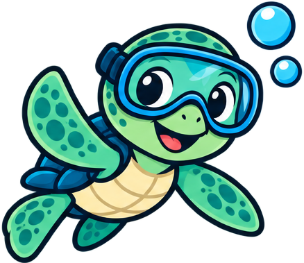

This page is general information, not medical advice. If you have ear pain, hearing changes, ringing or dizziness after diving, see a doctor, and you can call DAN's medical information line (+1-919-684-2948, option 4, weekdays). In an emergency, call 911, then the DAN Emergency Hotline, +1-919-684-9111.
New to diving · Ears
Ear basics for divers
DAN calls ear squeeze (middle-ear barotrauma) the most common pressure-related ear injury in diving, and most of it is preventable. Here are the basics, mostly from DAN (Divers Alert Network).

Equalize early and often
- Start at the surface, before you go down, and keep equalizing gently every few feet, especially in the first 10 to 15 feet.
- Go down feet first, and use a descent line or the bottom slope to control your speed.
- Be gentle. Pinching your nose and blowing (the Valsalva maneuver) works for most people, but blowing hard can injure your inner ear. DAN describes other methods worth practicing, like swallowing or moving your jaw while pinching your nose.
Pain means stop
DAN is clear: pain is not acceptable. If your ear hurts or won't clear, stop going down, go up a few feet until it eases, and try again gently. If it still won't clear, end the dive. Pushing through causes injury.
Other things that help
- Don't dive with a cold or stuffy nose. Blocked tubes make equalizing hard and injury more likely.
- Don't wear regular earplugs for diving; they create an air space you can't equalize.
- Make sure your hood isn't so tight that it seals over your ears.
- If you get itchy, red ear canals after diving (swimmer's ear), DAN suggests rinsing your ears with clean fresh water at the end of the dive day.
- Ask your doctor before using decongestants or ear drops for diving.
If you think you've hurt your ear
Get out of the water and stay out until a doctor says your ear has healed. Don't dive again until you've been checked.
Checked November 27, 2026. Sources: DAN, Ears and Diving; DAN, 10 Tips for Easy Equalizing; DAN, Ear Equalization Guidelines; PADI, ear equalization and ear care; DAN contact numbers. More for new divers